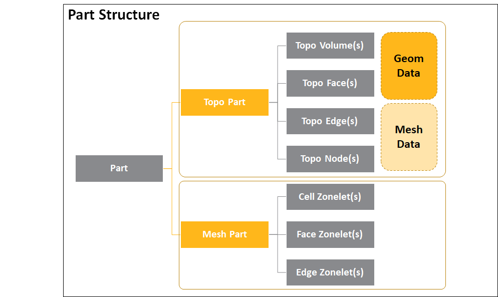
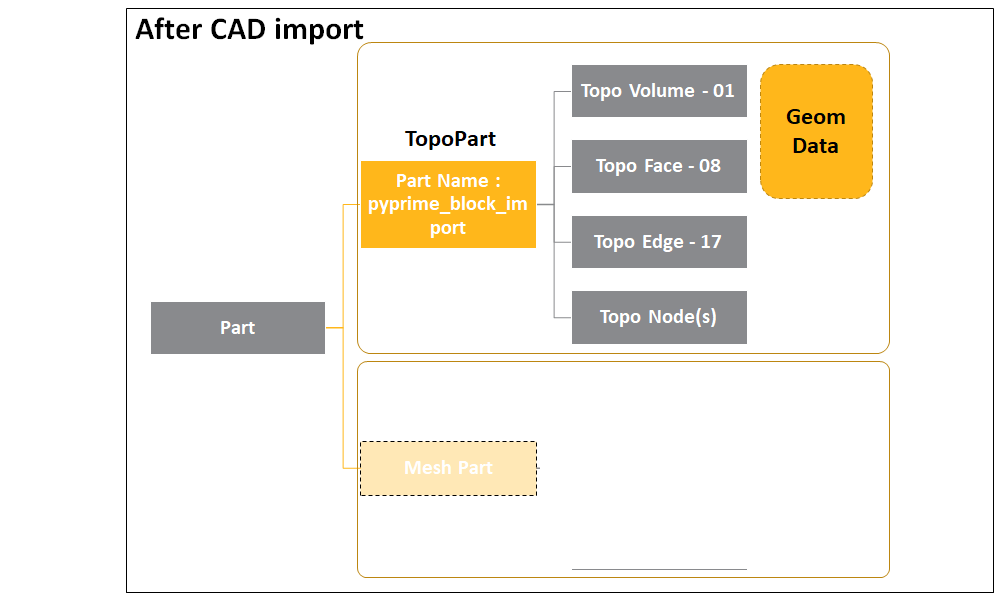
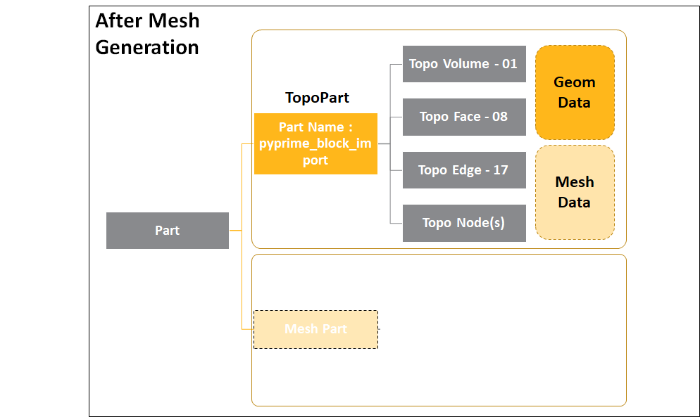
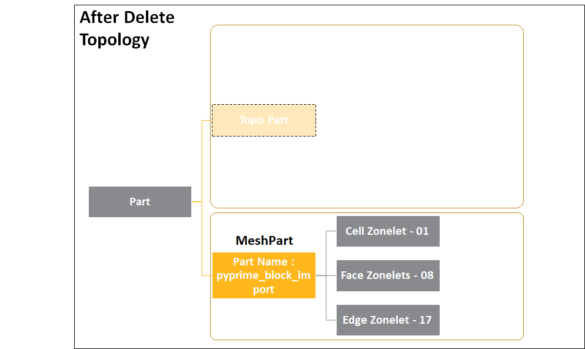
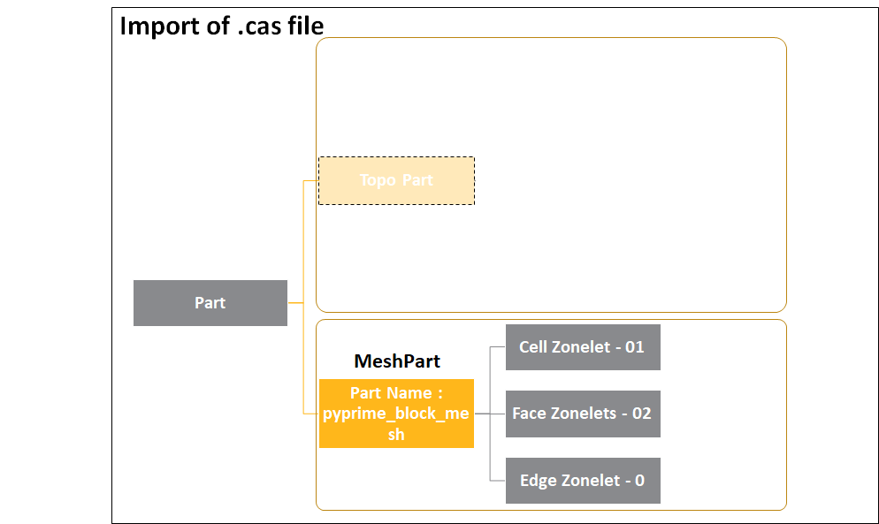

Note
Go to the end to download the full example code.
Convert data when importing and exporting mesh and CAD formats#
Summary: This example shows how mesh and geometry formats are converted during import and export.
Objective#
The objective is to illustrate how data is converted and passed during import and export of mesh and geometry.
{kind=link}
Procedure#
Launch an Ansys Prime Server instance.
Instantiate the meshing utilities from the
lucidclass.Import CAD geometry and review the imported entities.
Generate surface mesh with a constant mesh size of 2mm.
Generate volume mesh using tetrahedral elements and default settings .
Review the entities to be exported to solvers.
Export the mesh file as pmdat, cdb and cas format.
Import the created solver files to review the entities as they are coming from the solvers.
Exit the PyPrimeMesh session.
Launch Ansys Prime Server#
Import all necessary modules and
launch an instance of Ansys Prime Server.
Connect the PyPrimeMesh client and get the model.
Instantiate meshing utilities from the lucid class.
import os
import tempfile
import ansys.meshing.prime as prime
from ansys.meshing.prime.graphics.plotter import PrimePlotter
prime_client = prime.launch_prime()
model = prime_client.model
mesh_util = prime.lucid.Mesh(model=model)
Using Ansys Prime Server from container ansys-prime-server-1
Import geometry#
Download the CAD file “pyprime_block_import.fmd” and import its geometry into PyPrimeMesh.
Display part details by printing the model. The TopoPart’s name from model details is pyprime_block_import.
After import of CAD model, within the topopart the facets from the CAD exists in the form of geom data. This can be seen in the image below.
{kind=link}
The topology consists of the following TopoEntities , they are TopoEdges, TopoFaces and TopoVolumes.
TopoEdge represent the curves/edges present in the CAD. In this case there are 17 edges present in SpaceClaim are imported as 17 TopoEdges.
TopoFace represent the surfaces/faces present in the CAD. The 8 CAD Faces present in SpaceClaim are imported as 8 Topofaces in PyPrimeMesh.
TopoVolume represent the solid volumes present in the CAD. Since there is only one solid body in SpaceClaim, this is imported as one Topovolume in PyPrimeMesh.
Named selections or groups in the CAD become labels after import. In this example , the Named Selection / Group named my_group in Spaceclaim is imported as a label in PyPrimeMesh.
After CAD import the solid body, surface body or an edge body present in SCDM would be defined as Volume Zones, Face Zones and Edge Zones in PyPrimeMesh. In the CAD model , there exist a single solid body named “solid” which after import becomes as a Volume Zone named solid.
mesh_util.read(file_name=prime.examples.download_block_model_fmd())
# mesh_util.read(file_name=prime.examples.download_block_model_scdoc())
print(model)
display = PrimePlotter()
display.plot(model)
display.show()
Part Summary:
Part Name: pyprime_block_import
Part ID: 2
17 Topo Edges
8 Topo Faces
1 Topo Volumes
0 Edge Zones
Edge Zone Name(s) : []
0 Face Zones
Face Zone Name(s) : []
1 Volume Zones
Volume Zone Name(s) : [solid]
1 Label(s)
Names: [my_group]
Bounding box (-16 0 -17)
(12 28 11)
Generate Mesh#
The topo part currently has no mesh associated with it and contains only geometry.
Using the Lucid API surface_mesh, users can generate a conformal mesh on the topofaces.
A conformal mesh with a constant mesh size of 2mm is generated. After mesh generation, the
mesh data is available within the TopoPart.
This can be seen in the image below
{kind=link}
The mesh for a group of topo faces labeled “my_group” is displayed by defining the label expression in the display scope. The Volume Mesh is generated keeping the volume fill as the default meshing algorithms.
mesh_util.surface_mesh(min_size=2.0)
display = PrimePlotter()
display.plot(model, update=True)
display.show()
part = model.get_part_by_name("pyprime_block_import")
display = PrimePlotter()
display.plot(model, prime.ScopeDefinition(model, label_expression="my_group"))
display.show()
mesh_util.volume_mesh()
Export mesh as PyPrimeMesh (.pmdat) native format mesh file#
PyPrimeMesh allows user to export mesh in its native format name pmdat. This configuration allows retaining the topology data along with mesh data.
temp_folder = tempfile.TemporaryDirectory()
mesh_file_pmdat = os.path.join(temp_folder.name, "pyprime_block_mesh.pmdat")
mesh_util.write(mesh_file_pmdat)
assert os.path.exists(mesh_file_pmdat)
print("\nExported file:\n", mesh_file_pmdat)
Exported file:
/tmp/tmpa_psj9wj/pyprime_block_mesh.pmdat
Export mesh as Ansys MAPDL (.cdb) format mesh file#
PyPrimeMesh allows export of mesh as Ansys MAPDL (.cdb) format mesh file. While exporting the mesh to Ansys MAPDL, the labels present in session are converted to components containing nodes.
mesh_file_cdb = os.path.join(temp_folder.name, "pyprime_block_mesh.cdb")
mesh_util.write(mesh_file_cdb)
assert os.path.exists(mesh_file_cdb)
print("\nExported file:\n", mesh_file_cdb)
This get_abaqus_simulation_data is a beta API. The behavior and implementation may change in future.
Exported file:
/tmp/tmpa_psj9wj/pyprime_block_mesh.cdb
Export mesh Ansys Fluent (CAS) format mesh file#
Zones in PyPrimeMesh can be defined as a collection of either topo or zonelet entities that we can assign properties to in a solver when exported as mesh , for example “if the user wishes to assign a material to a region of the model they can define a volume zone for multiple topo volumes or cell zonelets so they can apply the property.
Hence while exporting the mesh as (MSH or CAS) file to the Fluent solver, the boundary conditions for the zones needs to be defined. For this reason the topo entities / zonelets associated with a labels are converted to volume/face/edge zones respectively.
The property of a zone is that a zonelet or TopoEntity can only be present in a single zone. The topo entities / zonelets that are not associated with their respective zones types are merged together during export to Fluent formats. The topology data present is removed automatically when export to Fluent(MSH or CAS) formats.
mesh_util.create_zones_from_labels("my_group")
print(model)
# Export as Fluent (*.cas) format mesh file
mesh_file_cas = os.path.join(temp_folder.name, "pyprime_block_mesh.cas")
mesh_util.write(mesh_file_cas)
assert os.path.exists(mesh_file_cas)
print("\nExported file:\n", mesh_file_cas)
Part Summary:
Part Name: pyprime_block_import
Part ID: 2
17 Topo Edges
8 Topo Faces
1 Topo Volumes
0 Edge Zones
Edge Zone Name(s) : []
1 Face Zones
Face Zone Name(s) : [my_group]
1 Volume Zones
Volume Zone Name(s) : [solid]
1 Label(s)
Names: [my_group]
Bounding box (-16 0 -17)
(12 28 11)
Exported file:
/tmp/tmpa_psj9wj/pyprime_block_mesh.cas
Reading Ansys PyPrimeMesh native mesh file (pmdat)#
Read the exported PyPrimeMesh(pmdat) native mesh format file, it is observed that part topology contains both geom data as well as mesh data. This is seen in the image below
{kind=link}
Meshed zonelets (that contain the mesh data) are only created once the topo part is converted to a mesh part by deleting the topo entities. Here , while deleting the topology we are deleting the geom data (face) and retaining the mesh data for solve purpose. When deleting the topoogy , the TopoPart is converted to MeshPart and the topo entities are converted to their respective zonelet type in MeshPart, this is shown as follows;
01 TopoVolumes -> 01 Cell Zonelets
08 TopoFaces -> 08 Face Zonelets
17 TopoEdges -> 17 Edge Zonelets
The zones association with topoentities would change to their corresponding equivalent zonelet type in MeshParts.
{kind=link}
mesh_util.read(mesh_file_pmdat, append=False)
print(model)
for part in model.parts:
if len(part.get_topo_faces()) > 0:
part.delete_topo_entities(
prime.DeleteTopoEntitiesParams(
model, delete_geom_zonelets=True, delete_mesh_zonelets=False
)
)
print(model)
Part Summary:
Part Name: pyprime_block_import
Part ID: 2
17 Topo Edges
8 Topo Faces
1 Topo Volumes
0 Edge Zones
Edge Zone Name(s) : []
0 Face Zones
Face Zone Name(s) : []
1 Volume Zones
Volume Zone Name(s) : [solid]
1 Label(s)
Names: [my_group]
Bounding box (-16 0 -17)
(12 28 11)
Part Summary:
Part Name: pyprime_block_import
Part ID: 2
17 Edge Zonelets
8 Face Zonelets
1 Cell Zonelets
0 Edge Zones
Edge Zone Name(s) : []
0 Face Zones
Face Zone Name(s) : []
1 Volume Zones
Volume Zone Name(s) : [solid]
1 Label(s)
Names: [my_group]
Bounding box (-16 0 -17)
(12 28 11)
Reading Ansys Fluent (.cas) format mesh file#
Read the exported Fluent format mesh file.
{kind=link}
It would be observed that the zone name my_group is retained and the remaining face zonelets that are not associated with a face zone(s) are merged to create a new zone named wall. There are no labels present in the mesh file.
mesh_util.read(mesh_file_cas, append=False)
print(model)
part = model.parts[0]
for zone in part.get_face_zones():
print(model.get_zone_name(zone))
scope = prime.ScopeDefinition(
model,
evaluation_type=prime.ScopeEvaluationType.ZONES,
zone_expression=model.get_zone_name(zone),
)
display = PrimePlotter()
display.plot(model, scope, update=True)
display.show()
Part Summary:
Part Name: pyprime_block_mesh
Part ID: 2
0 Edge Zonelets
2 Face Zonelets
1 Cell Zonelets
0 Edge Zones
Edge Zone Name(s) : []
2 Face Zones
Face Zone Name(s) : [wall, my_group]
1 Volume Zones
Volume Zone Name(s) : [solid]
0 Label(s)
Names: []
Bounding box (-16 0 -17)
(12 28 11)
wall
my_group
Exit PyPrimeMesh#
prime_client.exit()
Total running time of the script: (0 minutes 18.721 seconds)